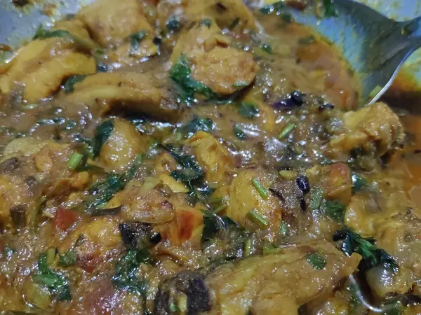

Фото: Gaurav Dhwaj Khadka, CC BY-SA 4.0

Курица карри с рисом
Курица в пряном томатном соусе карри с отварным рисом, без сливок
40 мин4 порц.538 ккал на порциюБ 42 · Ж 11 · У 68Азиатская кухня
Продукты на 4 порц.
- Куриное филе600 г
- Рис1,5 стак.
- Вода3 стак.
- Лук репчатый1 шт
- Чеснок2 зуб.
- Имбирь2 ч. л.
- Карри (приправа)1 ст. л.
- Томаты в собственном соку1 шт
- Кокосовое молоко по желанию1 стак.
- Растительное масло2 ст. л.
- Соль2 ч. л.
- Кинза по желанию0,5 пучок
Как готовить
- Рис промойте, залейте водой, добавьте половину соли. Варите под крышкой на слабом огне 15 минут, затем снимите с огня и оставьте под крышкой.
- Курицу нарежьте кубиками 2 см, лук - мелким кубиком, чеснок и имбирь натрите.
- Обжарьте лук на масле на среднем огне 5 минут до мягкости. Добавьте чеснок, имбирь и карри, жарьте 1 минуту, помешивая.
- Добавьте курицу и жарьте 5 минут, пока кусочки не побелеют со всех сторон.
- Влейте томаты, размяв их ложкой, и кокосовое молоко, если используете. Посолите.
- Тушите без крышки на слабом огне 12-15 минут, пока соус не загустеет, а курица на разрезе не станет белой.
- Подавайте с рисом, посыпав кинзой.
Совет. Специи обжаривают в масле перед добавлением жидкости: так раскрывается аромат. Без кокосового молока соус получается кислее, добавьте щепотку сахара.